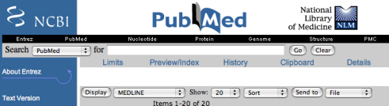

Opening an RIS File Opening an RIS File
Opening an RIS File Opening an RIS FileBibDesk expects a file with the extension `.fcgi' or `.ris'. Many of the RIS tags are converted into their BibTeX equivalents, but unknown tags are left as-is for you to deal with manually. BibDesk's RIS import feature converts some HTML characters and tags into LaTeX commands, which can be handy when importing large numbers of references; the LaTeX produced may be rather primitive, however.
Just do your search as usual on PubMed, and then select the settings as in the following image:

The important settings are that it should be set to Display "MEDLINE" and Send to "File". Then click the "Send to" button, and a file will be saved to your download folder. You can then use BibDesk to open this file. Once you have opened the file it cannot be saved back in the same format. If you want to, you can save it as a BibTeX file, or transfer the translated entries over into a BibTeX file that you use permanently.
Many online databases have the capability to export RIS (the Reference Manager format), and BibDesk can open those files directly. SonnySoftware offers a free application called "ReferenceMiner" which searches PubMed, the Library of Congress, and Amazon. References can be dragged from ReferenceMiner directly into BibDesk's publication list, which may be more convenient for those sources.
The Services menu items "BibDesk > Add to Bibliography" and "BibDesk > New Document With RIS"can be used from a text editor or web browser which supports Services to either add selected RIS text to an existing document, or create a new document based on the selected text. Further, RIS can be pasted or dragged directly into BibDesk's publication list as text, so at least one method should be convenient for your particular situation! BibDesk can also save RIS files directly, although some modification of the original source will occur, and this is only recommended when it is necessary to share files with other people or applications.